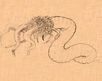

|
 
e nethermost caverns
are not for ye fathoming of eyes that see; for their marvels are strange
and terrific. Cursed ye ground where dead thoughts live new and oddly
bodied, and evil ye mind that is held by no head. Wisely did Ibn Schacabao
say, that happy is ye tomb where no wizard hath lain, and happy ye town at
night whose wizards are all ashes. For it is of old rumour that the soul
of ye devil-bought hastes not from his charnal clay, but fats and
instructs ye very worm that gnaws; till out of curruption horrid life
springs, and ye dull scavengers of earth wax crafty to vex it and swell
monstrous to plague it. Great holes secretly are digged where earth's
pores ought to suffice, and things have learnt to walk that ought to
crawl. |
 f ye Worm that Gnaws
f ye Worm that Gnaws
 Ye
Legacy of Ye Old Ones Ye
Legacy of Ye Old Ones |